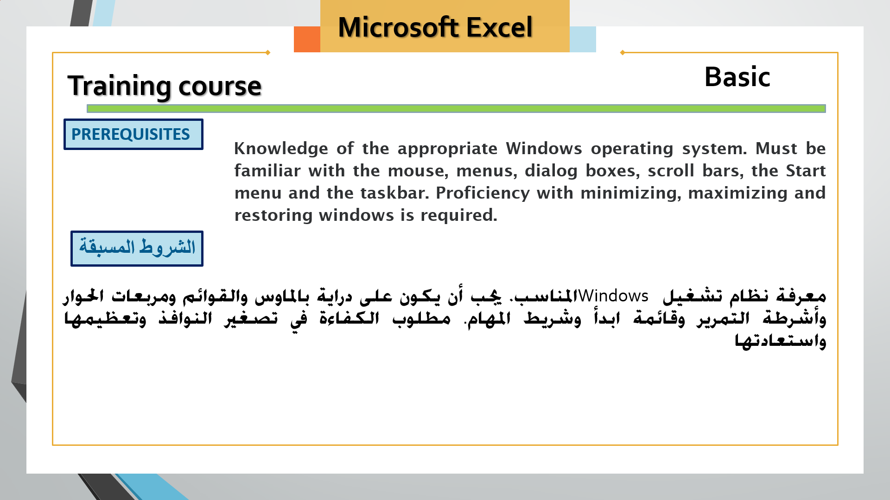

مكتبة الدورات التعليمية
صفحات المحتوى والموارد المستخرجة من موقع Google Sites، مع روابط الدروس والاختبارات والملفات المتاحة.
الإدارة والأعمال
مسار البكالوريا المصرية: فهم منظمات الأعمال والقرارات وأصحاب المصلحة والبيئة والإدارة.
فتح المسار ←
البرمجة
مسار لتعلّم أساسيات البرمجة، والانتقال إلى التطبيق من خلال أنشطة ومشروعات صغيرة.
فتح المسار ←
Python
صفحة تعليم أساسيات Python من الموقع القديم.
فتح المسار ←
Scratch — البرمجة للأطفال
تعليم البرمجة للأطفال باستخدام أنشطة مرئية ومشروعات صغيرة.
فتح المسار ←
ICDL ومهارات الكمبيوتر
مسار لمهارات الكمبيوتر والإنترنت وبرامج Microsoft Office.
فتح المسار ←Windows والإنترنت
أساسيات الكمبيوتر والإنترنت وإدارة الملفات والتطبيقات والشبكات والبريد الإلكتروني.
فتح المسار ←Microsoft Word
معالجة النصوص وتنسيق المستندات وإعداد التقارير والسير الذاتية.
فتح المسار ←Microsoft PowerPoint
إنشاء عروض تقديمية منظمة باستخدام النصوص والصور والجداول والرسوم والصوت والفيديو.
فتح المسار ←
Microsoft Excel
تنظيم البيانات وإجراء العمليات الحسابية وتحليل البيانات وإنشاء التقارير والرسوم البيانية.
فتح المسار ←تحليل البيانات
استخدام أدوات التحليل ولوحات المعلومات لتحويل البيانات إلى مؤشرات تساعد على اتخاذ القرار.
فتح المسار ←المحتوى التعليمي
فهرس المسارات التعليمية الموجودة في موقعك القديم.
فتح المسار ←المشروعات الجاهزة
نماذج مشروعات عملية واردة في الموقع القديم.
فتح المسار ←السيرة الذاتية والشهادات
ملفات السيرة الذاتية وصور صفحة الشهادات.
فتح الصفحة ←